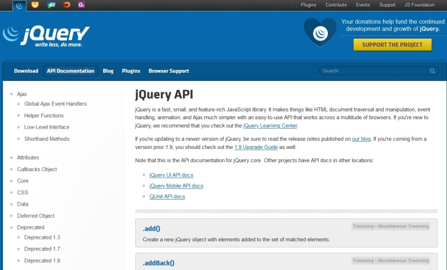
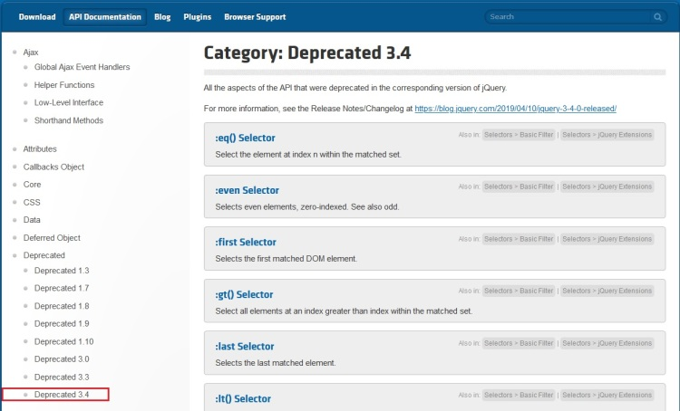
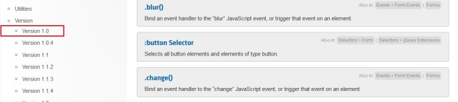
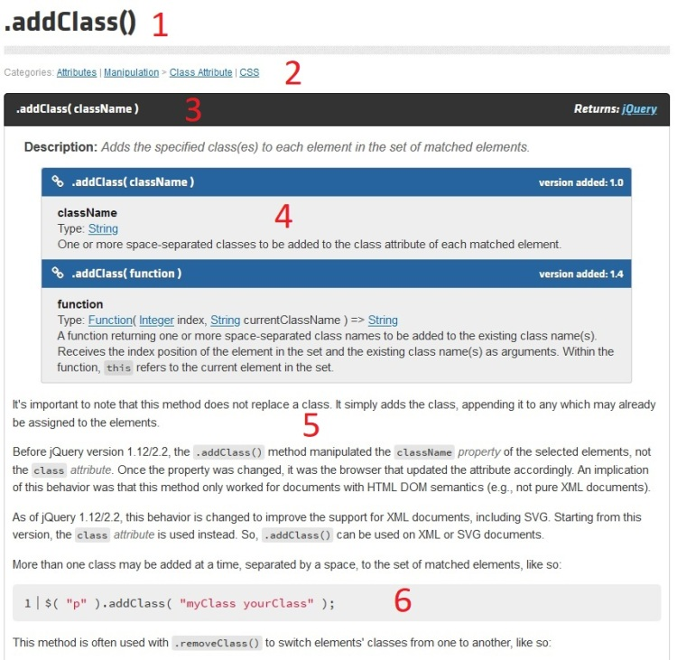
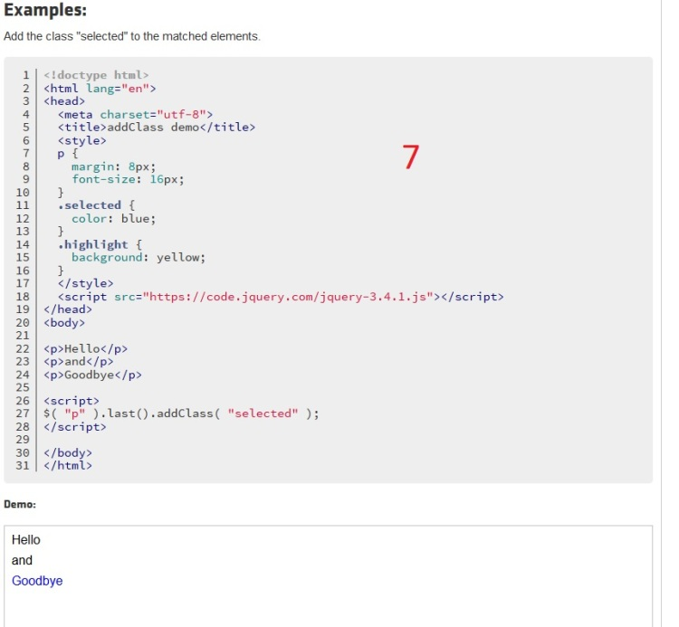

- Rechercher efficacement dans la documentation jQuery
Mise en situation
jQuery est une librairie très complète. Pas question de parcourir son
code pour connaître ses arcanes, nous utiliserons plutôt sa
documentation bien fournie.
Présentation générale
La
documentation de la librairie
est accessible directement sur le site officiel de jQuery, dans le menu
API Documentation.

On y retrouve :
-
un v listant par défaut l'ensemble des méthodes
disponibles dans jQuery, comme addClass(), html(), click().
-
un menu de gauche permettant de filtrer les méthodes
par catégories comme les sélecteurs, les événements, les formulaires.
-
une zone de recherche en haut à droite permettant la
recherche d'une méthode par son nom.
Identifier les variantes de fonctionnalités
Le menu de gauche, section deprecated, permet également
de lister les éléments et méthodes obsolètes selon la version de la
librairie.
Cela peut s'avérer très utile pour savoir ce qu'il faudra mettre à jour
dans un script durant une montée de version, par exemple.

Un peu plus bas, dans la section version, on retrouve
les méthodes ajoutées aux différentes versions de jQuery.
Toujours dans le cas d'une montée de version, cela permet de connaître
les nouveautés apportées.

La recherche d'information
La barre de recherche située à droite dans le menu du haut permet de
rechercher un élément.
Les résultats de recherche sont mis à jour au fil de la saisie.
Lire la documentation d'un élément
Prenons l'exemple de la
méthode addClass.
La documentation d'une méthode se décompose ainsi :
- Rappel du nom de la méthode
-
Catégories auxquelles elle appartient : permet de nous donner des
indications du contexte dans lequel l'utiliser
-
Signature de la méthode, c'est-à-dire son nom, ses éventuels
paramètres et ce qu'elle retourne
- Une description précise des paramètres attendus
-
Des indications sur l'utilisation de la méthode selon les versions de
jQuery
- Des exemples de syntaxe
- Des exemples d'application avec le résultat escompté


À retenir
Syntaxe
-
Dans le cadre d'une librairie aussi fournie que jQuery, la
documentation est notre meilleure alliée.
-
Les exemples d'application sont nombreux, ce qui est un plus dans
l'apprentissage d'une technologie.